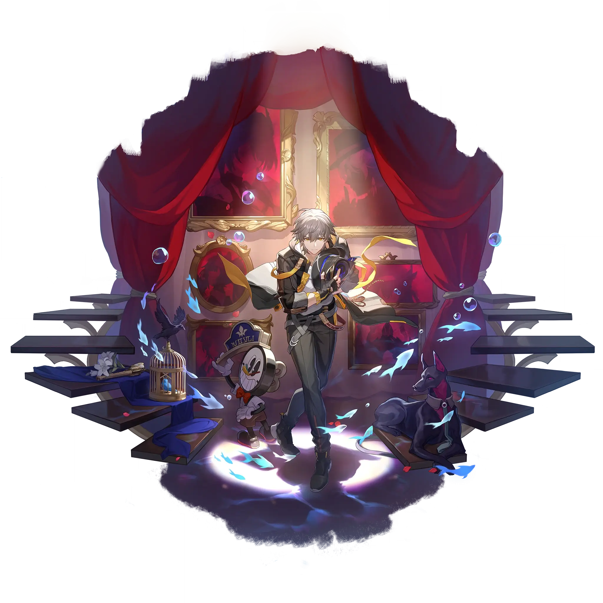

Trailblazer • Harmony
Best Trailblazer • Harmony build guide for Honkai Star Rail. See Trailblazer • Harmony's best Relics, Light Cones, teams, Eidolons, Trace priority, and how to play Trailblazer • Harmony.
🔍 Detail Skill
Semua skill aktif dan pasif beserta efeknya.
Deals Imaginary DMG equal to #1[i]% of the Trailblazer's ATK to a single target enemy.
Deals Imaginary DMG equal to #1[i]% of the Trailblazer's ATK to a single target enemy and additionally deals DMG for 4 times, with each time dealing Imaginary DMG equal to #1[i]% of the Trailblazer's ATK to a random enemy.
The Trailblazer immediately regenerates #1[i] Energy when an enemy target's Weakness is Broken.
After the Technique is used, at the start of the next battle, all allies' Break Effect increases by #1[i]%, lasting for #2[i] turn(s).
⚔ Light Cone Terbaik
Diurutkan dari yang paling kuat. Persentase menunjukkan performa relatif terhadap pilihan terbaik.
💎 Relic Set Terbaik
Set terbaik untuk karakter ini, diurutkan berdasarkan prioritas.
📊 Stat Utama
Stat yang dicari pada tiap slot.
👥 Tim yang Direkomendasikan
Karakter yang sering dipasangkan bersama Trailblazer • Harmony.
 Ruan Mei
Ruan Mei
 Boothill
Boothill
 Trailblazer • Harmony
Trailblazer • Harmony
🔗 Lanjutkan
Build ini dirangkum dari Prydwen Institute. Starwise tidak menghitung sendiri. Angka bisa berubah setelah patch atau karakter baru rilis.